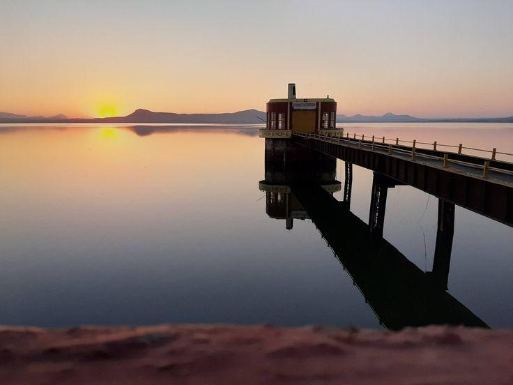
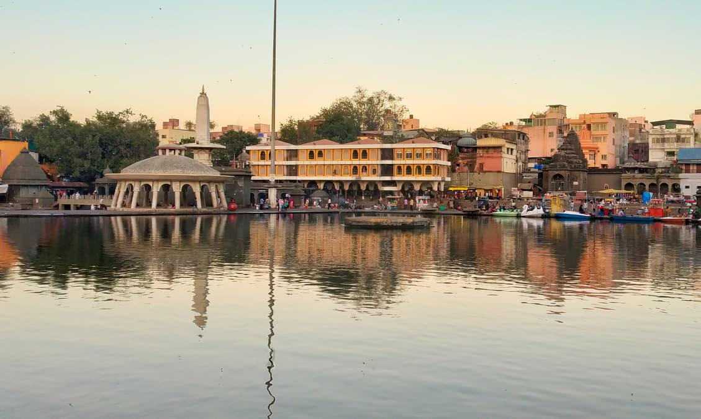

Sula Vineyards
Known for its vineyards and scenic surroundings.
Known for its vineyards and scenic surroundings.

A famous Hindu temple near the Brahmagiri hills.

Ancient rock-cut caves with historical importance.

A scenic destination with beautiful water views.

A well-known religious spot beside the Godavari.

A popular area for trekking and nature lovers.